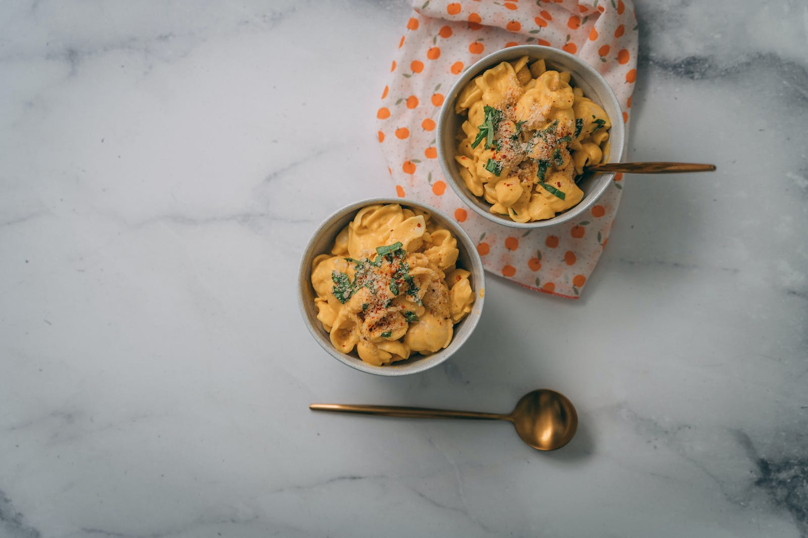

Southwest Mac and Cheese

A spicy twist of the classic macaroni and cheese
This recipe has been a favorite for football games and many other occassions.
Guests love the classic flavor of mac and cheese and are impressed by the added creativity that makes this dish pop!
You can adjust the spice level to taste, as well as for children who are not ready for spicy food yet.
Enjoy this recipe by itself or use it as an addition to nachos for a Southwest style party!
Ingredients
- Half of a Velveeta cheese block
- Milk
- One can of Rotel tomatoes
- One can of black beans
- Diced onions
- Taco seasoning
- Pasta shells
- (Optional) Salsa adds extra spice and flavor
Steps
- Saute onions and black beans in sauce pan
- Add the cheese and milk to the sauce pan at medium heat
- Boil water and add shells to water until soft
- Add can of Rotel to cheese
- Add taco seasoning to cheese
- Once the cheese sauce is mixed well, add the shells
- If adding salsa, mix it in now and maintain medium heat until served